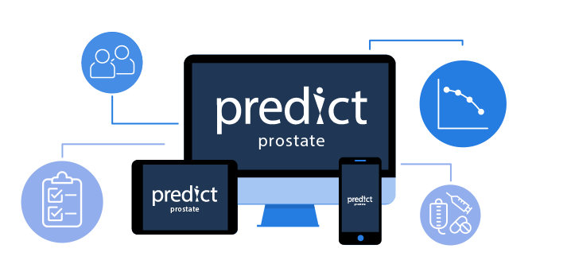

Predict Prostate
An individualised prognostic model for men newly diagnosed with non-metastatic prostate cancer

An individualised prognostic model for men newly diagnosed with non-metastatic prostate cancer
Predict Prostate is a tool where the outcomes from conservative management (or monitoring) are compared with radical treatment (surgery or radiotherapy).
Enter the details about yourself and your prostate cancer, and then select conservative management or radical treatment to see estimates of survival with each.
We recommend patients read the About Predict section before using the tool. Predict Prostate is only intended for use amongst men for whom both conservative management and radical treatment could both be appropriate options
The Predict Prostate tool shows you how different initial management strategies affect the percentage of men that survive ten and fifteen years after diagnosis. Non-individualised data is also shown on the potential harms of each treatment type.